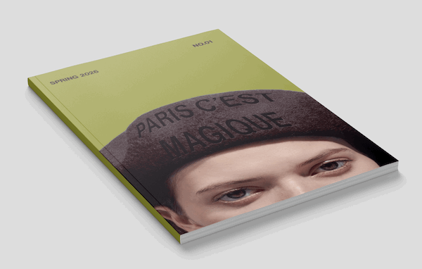

Indesign
fascicule
Un fascicule entièrement conçu sur Adobe InDesign : de l’idée à la mise en page finale, tout est de ma main.
- Conception
- Définition de la structure et du fil conducteur du document, pensés comme un ensemble cohérent du début à la fin.
- Rédaction
- Tous les textes ont été écrits par mes soins, avec un ton et une longueur adaptés à chaque page.
- Mise en page
- Construction sur Adobe InDesign : grille, hiérarchie typographique, équilibre entre textes et visuels, et pagination.
- Livrable
- Un fascicule finalisé, présenté ici en animation.
